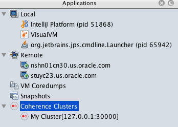

Access Management Over REST Endpoint Using VisualVM Plugin
This sample shows how to connect the VisualVM Plugin in Coherence 12.2.1.4.0 to a Coherence cluster using REST.
Note: Use of management over REST is available only when using the operator with Coherence 12.2.1.4.0.
Return to Management over REST samples Return to Management samples / Return to samples
Prerequisites
- Install Coherence Cluster
Follow the instructions here to install a Coherence cluster and port forward the management over REST port.
- Install the Coherence VisualVM plugin
Follow the instructions here to install the VisualVM plugin.
Installation Steps
- Start VisualVM
bash
$ jvisualvm
Or, if you have downloaded VisualVM separately, the executable is visualvm.
- Create the connection
If the Coherence Visualvm plugin is correctly installed, then you should see Coherence Clusters item under the Applications tab. Right-click on this and select Add Coherence Cluster.
Enter a name for the cluster, and then enter the following URL for management REST:
http://127.0.0.1:30000/management/coherence/cluster

- Connect to the cluster
Double-click on the new cluster you created and you can view the Coherence tab in VisualVM.
Uninstall the Charts
Use the following command to delete the chart installed in this sample:
$ helm delete storage --purge
Before starting another sample, ensure that all the pods are removed from previous samples.
If you want to remove the coherence-operator, then include it in the helm delete command.